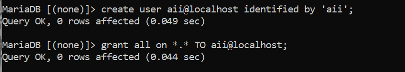
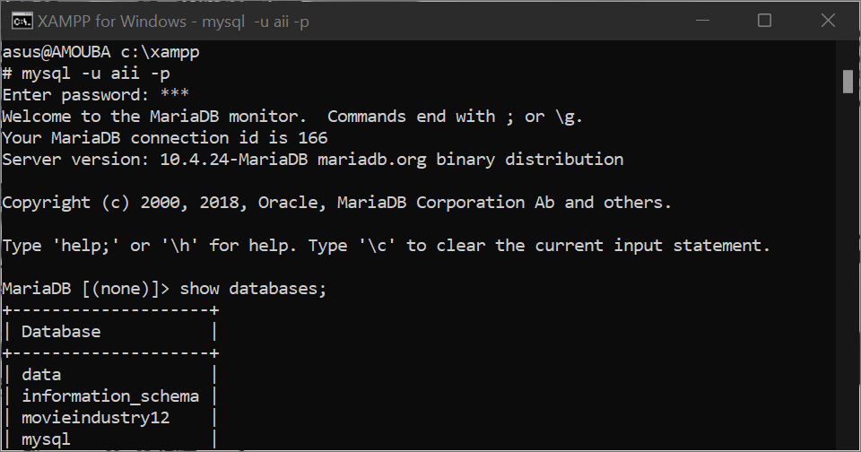
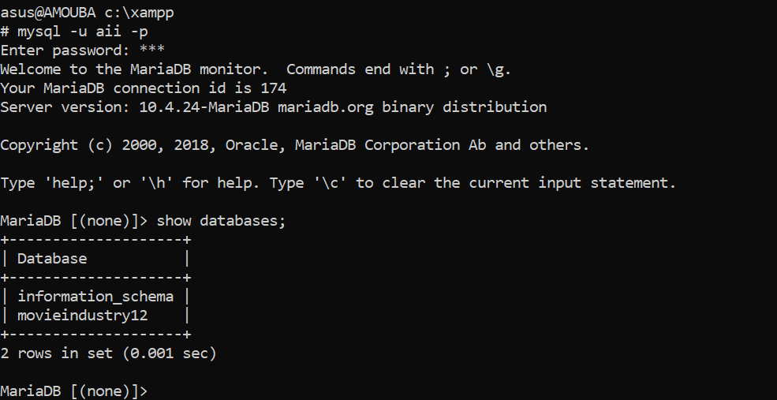
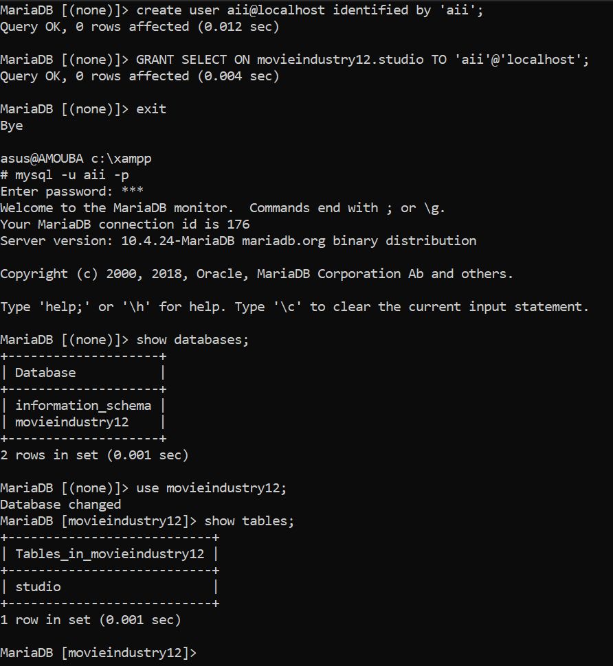
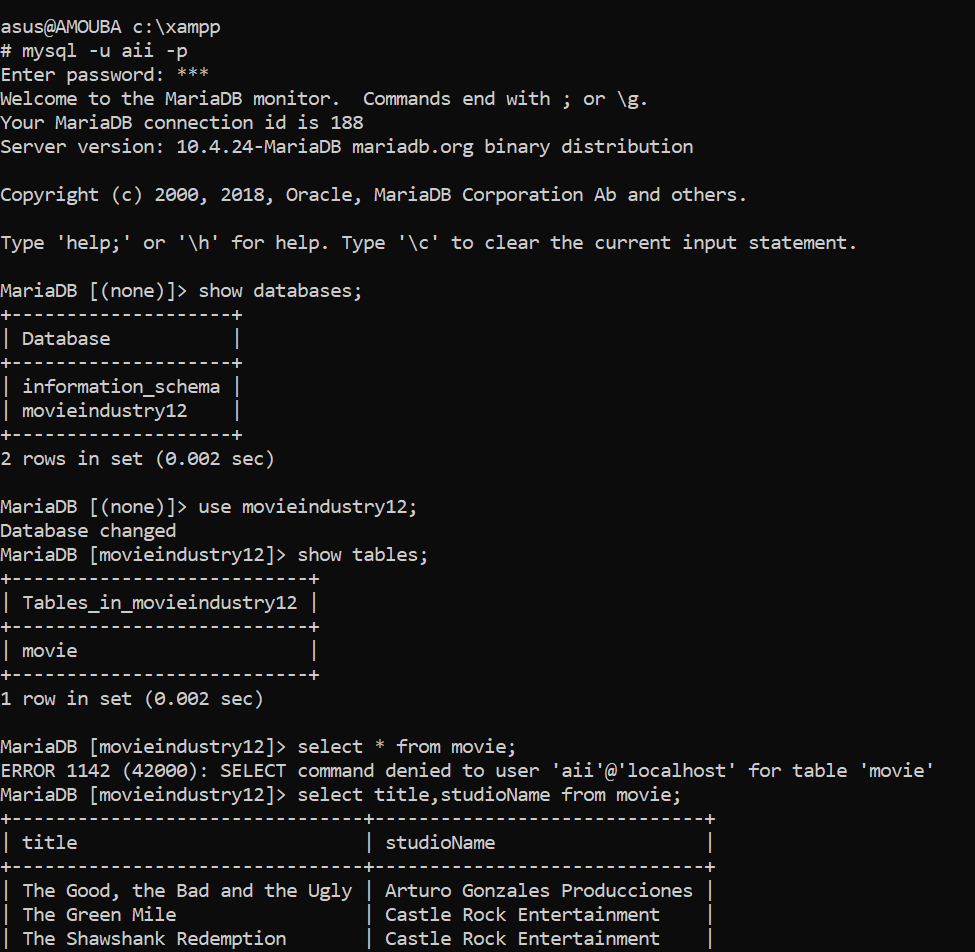

Jika didasarkan pada pengelompokkan ini, kita dapat membagi hak akses MySQL menjadi 4 level tingkatan, yaitu:
Hak Akses Secara Global (*.*)
Hak akses ini berarti user dapat memiliki hak akses untuk seluruh database yang terdapat di dalam
MySQL.
Contoh penulisan query GRAND untuk level database ini
adalah:
GRANT SELECT ON *.* TO 'user'@'localhost';


Analisa : dilihat dari command di atas, user aii diberikan akses secara global yaitu setara dengan
user root, semua database bisa di akses.
Hak Akses Level Databases (nama_database)
Hak akses ini berarti user memiliki hak akses penuh untuk sebuah database.
Contoh penulisan query GRAND untuk level database ini adalah:
GRANT SELECT ON universitas.* TO 'user'@'localhost';

Analisa : dilihat dari command diatas user aii hanya diberikan hak akses untuk database
movieindustry12, sementara database yang lain tidak diberikan akses.
Hak Akses Level Table (nama_database.nama_table)
Hak akses ini berarti user memiliki hak akses untuk sebuah tabel yang berada pada sebuah database.
Contoh penulisan query GRAND untuk level database ini adalah:
GRANT SELECT ON nama_database.nama_table TO 'user'@'localhost'

Analisa : dilihat dari command diatas, user aii hanya diberikan akses di table studio di database
movieindustry12.
Hak Akses Level Kolom (nama_kolom)
Hak akses ini adalah hak akses paling kecil yang dapat diberikan kepada sebuah user. Dengan hak akses
level kolom, user hanya memiliki hak akses untuk beberapa kolom pada sebuah tabel.
Contoh penulisan query GRAND untuk level database ini adalah:
GRANT SELECT (title,studioName) ON movieindustry12.movie TO 'aii'@'localhost';

Analisa : dari command diatas, user diberikan hak akses hanya pada kolom title dan studioName di
table movie dari database movieindustry12.